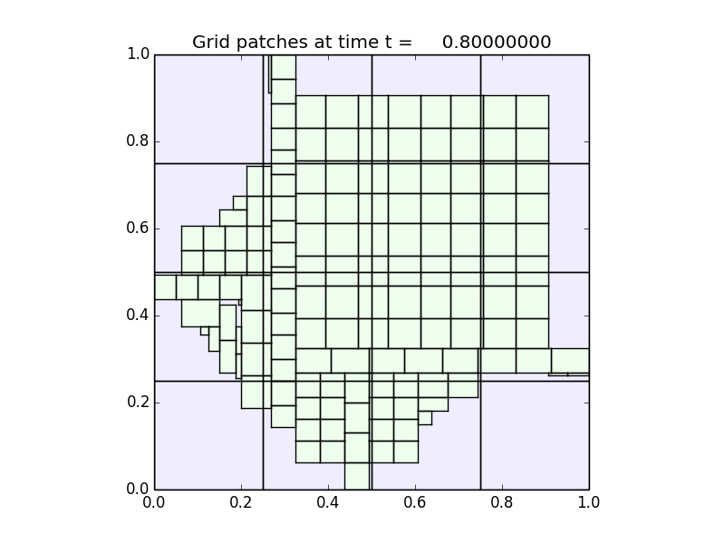

< < < Index > > >

Image source: /Users/ketch/Research/Software/clawpack/amrclaw/examples/euler_2d_quadrants/_plots/frame0004fig2.png
Other figures at this time: Density Schlieren cells All Figures
Other frames: 0 1 2 3 4 All Frames